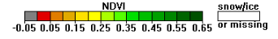

Project Idea
In our country we get to see every year that many people die due to not having proper amount of food and many Farmers commit Suicide since they failed to cultivate crops and get trapped in heavy debt. But what if the food that will produce in coming year is already known by doing analysis based on previous year data. By this we can make a proper storage of food, if it is known that next year not much food will be produced and can save our country from starvation. However this is already being done manually, record is maintained of food produced and the need of country. But this does work till certain extent only and what we are doing is a computer based analysis by which everyone get to know how much supply of food is there and if we share our analysis everybody will be aware about our country agriculture production. Our project Titled Satellite Imagery Analysis for Predicting Food Supply in our country is all about fetching the data in the form of image from various website which provides satellite image for use. After getting the data cleaning of dirty data is done which is followed by initial analysis and then building a predictive model. Pixel from the image is extracted for doing further analysis. We will also show an area in our country where there is huge agriculture production and an area where the same is less. The whole concept of the project is based on the Data Science and various types of data analytics technique will be used in our project. Tools which we are using for our project is R Studio for doing R programming, Tableau for getting initial overview of our country food supply data and if possible we would like to present our project in the form of web report. In R studio we will analyze different form of the Image data and see the color correlation within different images. We will use Windows environment to run all required software. We will make use of various R packages to do our project. We will analyze the Image data based on vegetation that is greenery. More the vegetation more will be the food produced and vice versa. The Vegetation could definitely contribute the impact to the annual agricultural production. That is why we have chosen vegetation as a parameter to judge greenness and hence agricultural production.
NDVI,Foundation for Remote Sensing Data
Remote sensing phenology studies use data gathered by satellite sensors that measure wavelengths of light absorbed and reflected by green plants. Certain pigments in plant leaves strongly absorb wavelengths of visible (red) light. The leaves themselves strongly reflect wavelengths of near-infrared light, which is invisible to human eyes. As a plant canopy changes from early spring growth to late-season maturity and senescence, these reflectance properties also change. Many sensors carried aboard satellites measure red and near-infrared light waves reflected by land surfaces. Using mathematical formulas (algorithms), scientists transform raw satellite data about these light waves into vegetation indices. A vegetation index is an indicator that describes the greenness — the relative density and health of vegetation — for each picture element, or pixel, in a satellite image. Although there are several vegetation indices, one of the most widely used is the Normalized Difference Vegetation Index (NDVI). NDVI values range from +1.0 to -1.0. Areas of barren rock, sand, or snow usually show very low NDVI values (for example, 0.1 or less). Sparse vegetation such as shrubs and grasslands or senescing crops may result in moderate NDVI values (approximately 0.2 to 0.5). High NDVI values (approximately 0.6 to 0.9) correspond to dense vegetation such as that found in temperate and tropical forests or crops at their peak growth stage. By transforming raw satellite data into NDVI values, researchers can create images and other products that give a rough measure of vegetation type, amount, and condition on land surfaces around the world. NDVI is especially useful for continental- to global-scale vegetation monitoring because it can compensate for changing illumination conditions, surface slope, and viewing angle. That said, NDVI does tend to saturate over dense vegetation and is sensitive to underlying soil color. NDVI values can be averaged over time to establish "normal" growing conditions in a region for a given time of year. Further analysis can then characterize the health of vegetation in that place relative to the norm. When analyzed through time, NDVI can reveal where vegetation is thriving and where it is under stress, as well as changes in vegetation due to human activities such as deforestation, natural disturbances such as wild fires, or changes in plants' phenological stage.
RA1511008010220
RA1511008010228
RA1511008010246
RA1511008010252